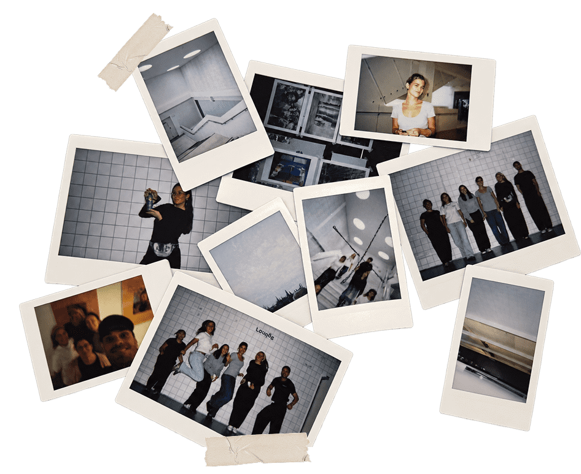
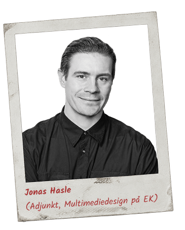
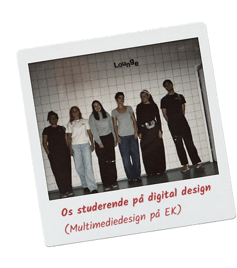
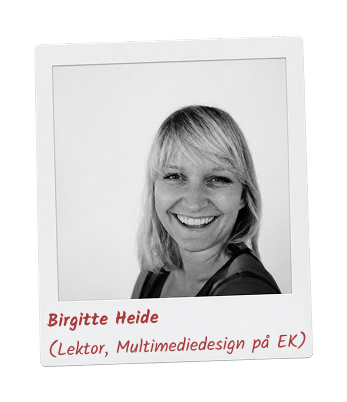
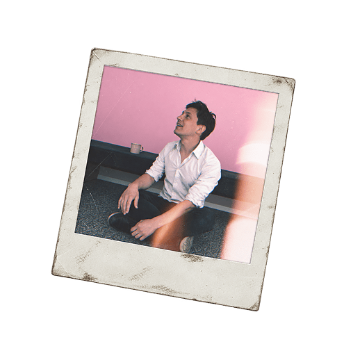
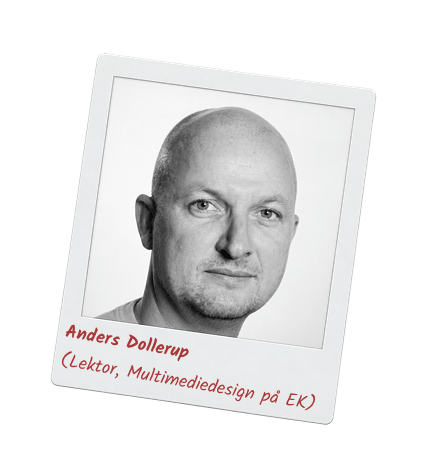

Hvem er vi?

Instant Ugen er et lille projekt, der drives af et par undervisere fra Multimediedesignuddannelsen på EK - Erhvervsakademi København.
Instant U-gen er et halvårligt projekt, hvor undervisere og studerende samarbejder om et digitalt design- og kommunikationsrelateret projekt relateret til Instant Ugen.
I bund og grund ønsker vi bare at promovere instant fotografering og have det sjovt, mens vi gør det :-).
Mød dommerne
Bidrag vil blive gennemgået af:




